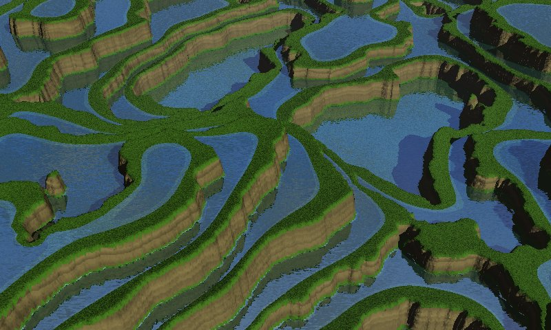
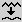

Comment
créer des terrasses irriguées avec Geomorph
En utilisant l'outil de
"relèvement des bords" et une "carte des eaux"
Geomorph 0.40 offre un outil de "relèvement des bords"  qui
permet, lorsqu'utilisé avec l'outil "terrasses"l
qui
permet, lorsqu'utilisé avec l'outil "terrasses"l  , de
créer des terrasses ayant l'air d'être irriguées
à des fins agricoles.
, de
créer des terrasses ayant l'air d'être irriguées
à des fins agricoles.

Nous utiliserons ici la technique de la "carte des eaux", aussi
montrée dans Création
de rivières sur un terrain érodé et Création d'une
"Chaussée des géants". Deux copies du même
terrain sont superposées avec Povray, la première dont
les bords sont surélevés (le terrain principal) et dont
la texture est un mélange de gazon et de terre, la seconde (la
"carte des eaux") portant une texture translucide et réflexive,
qui reste plate.
Un nouveau script terraces.pov est
proposé à cette fin. Il prend à l'entrée la
"carte des eaux" enregistrée comme
hf_water.png et le terrain
principal sur lequel vous travaillez, peu importe son nom.
Notre exemple a été créé de cette
façon:
Étape 1 - Créez
un terrain "subdivision 2" standard  . L'exemple a une grandeur de
512x512.
. L'exemple a une grandeur de
512x512.
Étape 2 - Diminuez son
contraset de -30 à l'aide de l'outi "luminosité /
contraste"  .
Les zones noires produisent des rebords trop surélevés,
tandis que les zones blanches peuvent produire des débordements.
.
Les zones noires produisent des rebords trop surélevés,
tandis que les zones blanches peuvent produire des débordements.
Étape 3 - Créez
les terrasses . Ici 6 niveaux ont
été utilisés, avec un rayon de lissage de 2 et un
rayon de suppression des artéfacts de 12 pixels. Supprimer les
artéfacts consiste à effacer les pics trop
étroits, au niveau de plus élevé.
Étape 4 - Clonez le
terrain avec "Copier sous un autre nom"  dans la
barre de menus, nommez le clone hf_water.png.
dans la
barre de menus, nommez le clone hf_water.png.
Étape 5 - Passez l'outil
de "crêtes"  sur hf_water.png avec le
paramètre prédéfini de 3
répétitions. Cela a pour effet de diminuer la surface de
chaque niveau d'eau, de sorte que les bords de la carte des eaux ne
dépasseront pas sous les terrasses gazonneuses.
sur hf_water.png avec le
paramètre prédéfini de 3
répétitions. Cela a pour effet de diminuer la surface de
chaque niveau d'eau, de sorte que les bords de la carte des eaux ne
dépasseront pas sous les terrasses gazonneuses.
Étape 6 - Relevez les
bords des terrasses avec l'outil de relèvement des bords .
Ici le rayon prédéfini de 20 a été
utilisé, à un niveau de 15.
Étape 7 - Vous pouvez
lisser les terrasses à l'aide de l'outil de lissage , selon le
résultat que vous désirez. Ici un rayon de lissage de 4 a
été utilisé.
Étape 8 -
Exécutez terraces.pov .
Comme dans les deux autres tutoriels
relatifs aux cartes des eaux, l'échelle du plan X-Z peut
être étirée en éditant terraces.pov pour améliorer le
résultat. Ici, un facteur d'échelle de 1,7x a
été spécifié.
___________________
Écrit en janvier 2007
 Retour à
l'index de la documentation
Retour à
l'index de la documentation
Contact:
Patrice St-Gelais